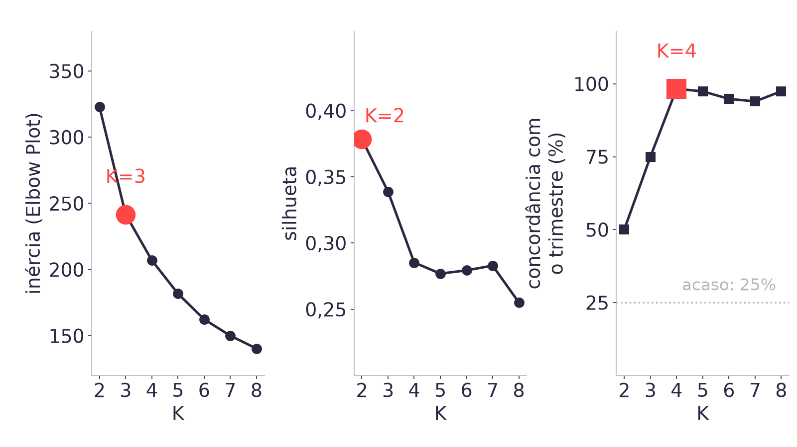
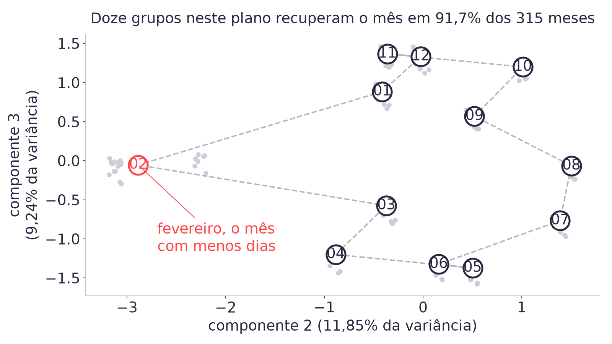
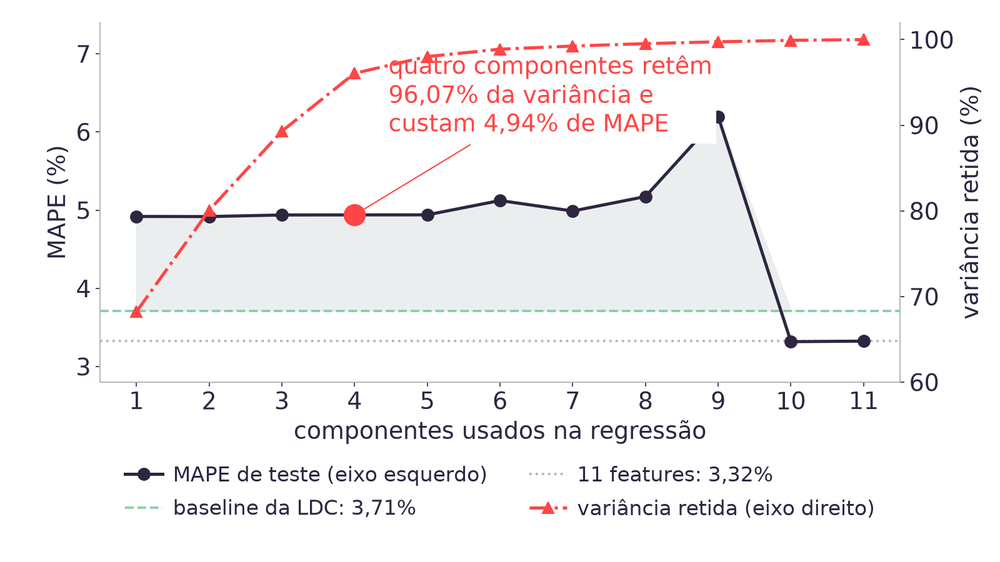

1. A base mensal e o modelo que a Aula 07 fechou
A Aula 07 corrigiu a granularidade do case e fechou o primeiro modelo que vence a
referência do parceiro. A classificação c12716 do SIDRA entregou a série em meses, a base
analítica mensal ficou com 339 linhas (1998-01 a 2026-03), o corte por data
separou 315 meses de treino (1998-01 a 2024-03) de 24 meses de
teste (2024-04 a 2026-03), e o modelo do fecho, uma regressão linear sobre a razão
abate_frangos / lag12 com onze features, chegou a MAPE de
3,32% contra 3,71% da baseline de coeficiente fixo da LDC. Árvore
de decisão e random forest ficaram atrás desse modelo em nível e em razão. O quadro completo
está em materiais/aula07.html#fecho.
Duas pontas ficaram abertas para hoje. A primeira vem da Aula 06, que fixou K em 4 por
decisão de aula e mandou o método de escolha de K para cá, conforme
docs/adrs/ADR-009. A segunda vem das próprias onze features: elas entraram no
modelo por afinidade com o problema, sem que ninguém tenha medido quanta informação
repetida existe entre elas.
A pergunta disparada de abertura é exatamente essa: quantas das onze features vocês acham que são realmente independentes entre si? A resposta medida está na seção 6, e é ela que motiva o bloco de PCA.
O escopo e o corte desta aula estão em
docs/adrs/ADR-011-escopo-e-base-do-pca-da-aula-08.md. Dois pontos dessa
decisão afetam a leitura desta página: a prática de PCA roda sobre as onze features da
base mensal, e não sobre preços de macroingrediente, porque não existe série aberta do
Sindirações em dados/; e sistemas de recomendação vira fecho conceitual de
dez minutos, sem prática, com os cinco autoestudos da Semana 06 cobrindo o assunto em
profundidade.
2. O que a inércia e a silhueta medem
As duas medidas que a semana anterior apresentou nos autoestudos olham para a mesma matriz que o K-means agrupou, e para nada além dela.
Inércia é a soma dos quadrados das distâncias de cada observação ao
centro do próprio grupo. O KMeans do scikit-learn expõe esse valor em
inertia_, e é ele que o algoritmo minimiza em cada execução. A inércia
cai sempre que K aumenta, porque grupos menores deixam cada observação mais
perto do próprio centro, até o caso extremo em que cada observação é o próprio grupo e a
inércia chega a zero. Minimizar inércia, portanto, não escolhe K. O que o Elbow Plot procura é
o ponto em que o ganho marginal de aumentar K deixa de compensar, o joelho da curva.
Silhueta compara duas distâncias para cada observação: a distância média
até as outras observações do próprio grupo (a) e a distância média até as
observações do grupo vizinho mais próximo (b). O valor da observação é
(b - a) / max(a, b), que fica entre -1 e 1, e o
silhouette_score devolve a média sobre todas as observações. Diferente da
inércia, a silhueta não é monótona em K, então ela pode ser maximizada, e é por isso que
aparece como critério de escolha.
from sklearn.cluster import KMeans
from sklearn.metrics import silhouette_score
from sklearn.preprocessing import StandardScaler
Z = StandardScaler().fit_transform(X)
for k in range(2, 9):
modelo = KMeans(n_clusters=k, n_init=50, random_state=42).fit(Z)
print(k, modelo.inertia_, silhouette_score(Z, modelo.labels_))As duas medidas descrevem geometria de matriz: quão compactos e quão separados são os grupos que o algoritmo formou. Nenhuma das duas recebe o trimestre do calendário, o mês, o alvo do case ou qualquer informação sobre para que serve o agrupamento. As seções 3 e 4 medem o que acontece quando o critério que interessa ao case é justamente essa informação de fora.
3. O Elbow aponta K=3, a silhueta aponta K=2 e só K=4 recupera o calendário
A base deste bloco é a mesma da Aula 06: junção interna das cinco séries de
dados/ pela coluna periodo, que dá 117 linhas de
1997-T1 a 2026-T1, com cada valor convertido na fração que ele representa no total do
próprio ano. Só entram anos com os quatro trimestres medidos, e sobram 116
linhas: 2026 tem apenas o T1, e incluir um ano incompleto faria o único trimestre
dele valer 100% do ano. A matriz é padronizada antes do KMeans, com
n_init=50 e random_state=42.

| medida | K=2 | K=3 | K=4 |
|---|---|---|---|
| inércia | 322,8 | 241,7 | 207,0 |
| queda de inércia em relação ao K anterior | 25,1% | 14,3% | |
| silhueta | 0,3785 | 0,3389 | 0,2853 |
| concordância com o trimestre do calendário | 50,0% | 75,0% | 98,3% |
A queda de inércia despenca depois de K=3: são 25,1% de K=2 para K=3 e 14,3% de K=3 para K=4, e as quedas seguintes ficam próximas dessa última. O joelho da curva está em 3, e é K=3 que o Elbow Plot escolhe. A silhueta tem máximo em K=2, com 0,3785, e cai a cada K adicional testado, chegando a 0,2853 em K=4.
A terceira linha da tabela mede outra coisa: a fração das 116 linhas cobertas pelo rótulo majoritário de cada grupo, tomando como verdade o trimestre do calendário. É a leitura que interessa ao case, porque o perfil sazonal que alimenta o Modelo 2 do TAPI precisa corresponder a trimestres reais para ser utilizável. Essa concordância vai de 50,0% em K=2 para 98,3% em K=4, o valor que os dois critérios internos rejeitam.
O mecanismo é direto. Expressar cada valor como participação no total do ano remove o nível e a tendência das séries, e o que sobra na matriz é a assinatura de calendário de cada trimestre. Quatro grupos reproduzem essa assinatura quase linha a linha, mas os quatro grupos ficam geometricamente próximos entre si, porque as participações trimestrais das cinco séries são parecidas: a silhueta lê essa proximidade como separação fraca e prefere dois grupos grandes, que juntam trimestres adjacentes e perdem a correspondência com o calendário.
Como usar os dois métodos, então. O Elbow Plot e a Silhouette Analysis continuam sendo a resposta padrão quando não existe nenhuma informação externa contra a qual comparar o agrupamento, que é a situação em que a maior parte do material de referência os apresenta. Nesta base existe informação externa, o trimestre do calendário, e ela vence os dois. A regra prática que a aula deixa: rodar os dois critérios, registrar o K que cada um aponta e, quando houver um rótulo externo disponível, medir a concordância com ele antes de fechar a escolha.
4. Na base de níveis a silhueta é maior em todo K e a concordância fica no acaso
O contraste fica mais claro rodando o mesmo procedimento sobre a base sem a conversão em participação: as 117 linhas da junção das cinco séries em nível, em quilogramas, mil dúzias e mil litros. Ali a silhueta é maior em todo K testado de 2 a 8, de 0,4247 em K=8 a 0,5639 em K=2, e a concordância com o trimestre do calendário fica entre 25,6% e 29,1%, ou seja, na faixa do acaso de quatro trimestres, que é 25%.
A Aula 06 já havia medido o par que resume o problema, e esta aula reusa esses dois números sem recalcular:
| agrupamento com K=4 | silhueta | concordância com o trimestre |
|---|---|---|
| séries em nível | 0,4795 | 26,5% |
| participação de cada trimestre no total do ano | 0,2853 | 98,3% |
O agrupamento com a melhor silhueta é o que menos serve ao case. O motivo está registrado em materiais/aula06.html#silhueta: em nível, as cinco séries crescem por 28 anos, e o K-means separa épocas do tempo, blocos de anos consecutivos. Épocas são grupos bem separados e compactos, porque a tendência afasta o começo do fim da série, e é essa separação que a silhueta premia. Nada nisso informa qual trimestre é qual.
5. Como o PCA rotaciona as onze colunas padronizadas
A análise de componentes principais procura, na matriz de features, a direção em que as
observações mais variam. Essa direção é o primeiro componente. O segundo é a direção de
maior variância entre as que são ortogonais à primeira, e assim por diante, até esgotar o
número de colunas. Cada componente é uma combinação linear das colunas originais, e os pesos
dessa combinação são os loadings, disponíveis em components_.
Duas propriedades explicam quase todo o resultado desta aula. A primeira: o conjunto completo de componentes é uma rotação da matriz original, que preserva a variância total e as distâncias entre observações, então rodar PCA sem descartar nada não muda a informação disponível. A segunda: o PCA é não supervisionado, então ele nunca vê o alvo. As direções são escolhidas por variância nas entradas, sem nenhuma referência ao que se quer prever.
O PCA depende da escala das colunas, porque variância é medida na unidade da coluna. Por isso o procedimento padrão padroniza antes, e por isso o escalador e o PCA são ajustados somente nos 315 meses de treino, com o teste apenas transformado. A seção 11 mede o que acontece sem padronizar e a seção 12 mede o que acontece ajustando na base inteira.
import numpy as np
from sklearn.decomposition import PCA
from sklearn.preprocessing import StandardScaler
FEATURES = ["lag1", "lag2", "lag3", "lag12", "sen", "cos", "dias",
"abate_bovinos_lag1", "abate_suinos_lag1",
"producao_ovos_lag1", "producao_leite_lag1"]
corte = len(base) - 24 # 315 meses de treino
X = base[FEATURES].to_numpy(dtype=float)
escalador = StandardScaler().fit(X[:corte]) # fit so no treino
Ztr = escalador.transform(X[:corte])
Zte = escalador.transform(X[corte:])
pca = PCA().fit(Ztr) # fit so no treino
pca.explained_variance_ratio_ # variancia de cada componente
np.cumsum(pca.explained_variance_ratio_) # variancia acumulada
pca.components_[0] # loadings do PC16. Vinte dos 55 pares de features passam de 0,9 de correlação absoluta
Esta é a resposta medida da pergunta disparada. Entre as onze features existem 55 pares
possíveis, e 20 deles têm correlação absoluta acima de 0,9. O par mais
correlacionado é lag1 com lag3, em 0,9810: a
produção de frango de um mês atrás e a de três meses atrás carregam quase o mesmo conteúdo,
porque as duas são o mesmo nível de produção observado em pontos próximos de uma série com
tendência de alta.
O número de condição da matriz padronizada é 28,50. É a razão entre o maior e o menor valor singular, a mesma medida que a Aula 05 usou para explicar por que a sazonalidade tinha sido zerada por corte numérico (materiais/aula05.html#condicionamento). Ali, sem padronizar, a condição estava na ordem de dez bilhões; aqui, com onze colunas padronizadas e 20 pares fortemente correlacionados, ela fica em 28,50, um valor que não ameaça a solução dos mínimos quadrados.
Vale separar os dois efeitos que a colinearidade produz, porque a aula mede um e não mede o outro. Colinearidade alta torna os coeficientes individuais instáveis, já que o ajuste pode distribuir o mesmo efeito entre colunas quase idênticas de muitas maneiras. Isso não implica erro de previsão maior, e a Aula 07 mostrou o modelo de onze features prevendo melhor do que qualquer alternativa testada. A redundância medida aqui é o motivo pelo qual a base tem menos direções úteis do que colunas, e é isso que o bloco de PCA explora nas seções 7 e 8.
7. PC1 concentra 68,21% da variância e carrega o nível comum das cinco séries
Sobre os 315 meses de treino padronizados, a variância se distribui assim entre os primeiros componentes:
| componente | variância explicada | variância acumulada |
|---|---|---|
| PC1 | 68,21% | 68,21% |
| PC2 | 11,85% | 80,06% |
| PC3 | 9,24% | |
| até PC4 | 96,07% |
Onze colunas, e quatro componentes chegam a 96,07% da variância. Pelo critério mais comum na literatura de reter 95% da variância, o número de componentes escolhido nesta base é 4.
Os loadings dizem o que cada direção descreve. No PC1, as oito colunas medidas em
quilos (as quatro defasagens de abate_frangos e as defasagens de um mês
das outras quatro séries) têm peso entre 0,336 e 0,362, quase idênticos
entre si, enquanto sen, cos e dias ficam
abaixo de 0,021 em módulo. PC1 é o nível comum: uma média das cinco séries,
que sobem juntas ao longo de 28 anos.
| componente | loadings dominantes |
|---|---|
| PC1 | as oito colunas em quilos, de 0,336 a 0,362; sen, cos e dias abaixo de 0,021 em módulo |
| PC2 | dias 0,692, sen -0,619, cos -0,341 |
| PC3 | cos 0,885, sen -0,432 |
PC2 e PC3 invertem o quadro: as três colunas de calendário dominam e as colunas em quilos saem de cena. Como a matriz não tem nenhuma coluna com o número do mês, e sim o par seno/cosseno construído na Aula 04 mais o número de dias do mês civil, esses dois componentes são a forma que o calendário encontrou de aparecer na base. A seção 8 mede o quanto eles recuperam.
8. O plano PC2 por PC3 recupera o mês em 91,7% dos 315 meses de treino

Projetando os 315 meses de treino no plano formado por PC2 e PC3 e agrupando esses pontos
em 12 grupos com KMeans, o rótulo majoritário de cada grupo acerta o mês em
91,7% das linhas. A silhueta dos rótulos verdadeiros de mês nesse mesmo
plano é 0,8037, o valor mais alto de silhueta medido em todo o módulo até
aqui.
Duas leituras importam. A primeira é sobre o dado: o calendário está na base, e está bem
separado, mesmo sem nenhuma coluna que diga o mês. O par sen e cos
percorre um círculo ao longo do ano, e o número de dias do mês acrescenta a terceira
dimensão que separa fevereiro do resto. Na figura, o centroide de fevereiro fica isolado à
esquerda, e o motivo é o peso de dias no PC2, 0,692: fevereiro tem 28 ou 29
dias contra 30 ou 31 dos demais meses, e essa diferença é a maior descontinuidade da coluna.
Os outros onze centroides formam um ciclo fechado, que é a imagem do ano.
A segunda leitura é sobre a silhueta. O valor de 0,8037 aqui, contra 0,2853 no agrupamento útil da seção 3, mostra que a medida sobe quando a estrutura geométrica coincide com o rótulo externo e desce quando não coincide. A silhueta mede separação geométrica com precisão, e a escolha de qual separação interessa ao case vem de fora dela.
O que este resultado não autoriza a concluir. Recuperar o mês em 91,7% das linhas não diz que PC2 e PC3 sejam boas entradas para o modelo. A seção 9 mede a previsão com componentes principais e o resultado piora. Reencontrar uma estrutura conhecida no espaço rotacionado valida que a rotação preservou o que se esperava dela, e o alcance dessa leitura termina aí.
9. Cortar para quatro componentes leva o MAPE de 3,32% para 4,94%
Este é o achado que a aula leva para a entrega. O procedimento repete o do fecho da Aula
07 e troca uma coisa só: em vez das onze features padronizadas, a regressão linear recebe os
k primeiros componentes principais, com o alvo continuando em razão
(abate_frangos / lag12) e a previsão voltando a quilogramas pela multiplicação
por lag12. O erro é medido nos mesmos 24 meses de teste.

| entradas da regressão | MAPE no teste | vence a baseline da LDC (3,71%) |
|---|---|---|
| k=1 componente | 4,92% | não |
| k=2 componentes (80,06% da variância) | 4,92% | não |
| k=3 componentes | 4,94% | não |
| k=4 componentes (96,07% da variância) | 4,94% | não |
| k=9 componentes | 6,20% | não |
| k=10 componentes | 3,32% | sim |
| k=11 componentes | 3,32% | sim |
| as onze features, sem PCA | 3,32% | sim |
O modelo perde da baseline de coeficiente fixo da LDC em todo k de 1 a 9.
Com quatro componentes, que retêm 96,07% da variância, o MAPE vai de 3,32% para 4,94%: a
vantagem que a Aula 07 conquistou sobre a referência do parceiro desaparece, e o custo é o
que a ADR-011 registra como 1,6 ponto percentual de MAPE. Só
k=10 devolve os 3,32%.
A linha de k=11 fecha o argumento. Com os onze componentes, o MAPE é idêntico ao das onze features até a nona casa decimal. PCA sem descarte é rotação, e regressão linear sem regularização é invariante a transformação afim das entradas, o mesmo mecanismo que a Aula 05 mediu ao verificar que padronizar treino e teste juntos não mudava o MAPE naquele modelo (materiais/aula05.html#vazamento). O custo medido nesta seção vem inteiramente do corte de componentes, e a rotação completa deixa a previsão intacta.
A curva também não é monótona: k=9 (6,20%) erra mais do que k=1 (4,92%). Componentes intermediários podem entrar com peso alto e sinal que só se compensa quando o componente complementar também está presente, o que explica o salto entre k=9 e k=10 e é o assunto da seção 10.
10. PC9 e PC10 recebem coeficiente 22 e 27 vezes o do PC1
O motivo do resultado anterior aparece nos coeficientes da regressão sobre os onze componentes:
| componente | variância explicada | coeficiente na regressão sobre a razão |
|---|---|---|
| PC1 | 68,21% | -0,009222 |
| PC9 | 0,21% | -0,203820 |
| PC10 | 0,17% | 0,250588 |
PC9 e PC10 são os dois menores componentes em variância entre os que sobrevivem ao corte de 95%, e recebem os dois maiores coeficientes em módulo de toda a regressão, 22 e 27 vezes o coeficiente do PC1. O componente que responde por 68,21% da variância das entradas é o que menos pesa na previsão.
O mecanismo já está descrito na seção 5: o PCA ordena as direções por variância nas features, sem olhar o alvo, e os mínimos quadrados atribuem peso por utilidade para o alvo, sem olhar variância. As duas ordenações não têm por que coincidir, e nesta base elas se opõem. PC1 é o nível comum das cinco séries, e o alvo em razão já foi construído justamente para remover o nível, dividindo cada mês pelo mesmo mês do ano anterior. Sobra para os componentes pequenos a informação que ainda diferencia um mês do outro depois que o nível saiu, e é essa informação que o corte por variância descarta primeiro.
A consequência prática para a dupla: reter componentes por variância acumulada é um
critério sobre as entradas, e o erro de previsão é uma medida sobre a saída. Quando o
objetivo é prever, a única forma de saber quanto custa o corte é medir o erro com cada
k, como a tabela da seção 9 faz.
11. Sem padronizar, PC1 explica 96,72% e descreve a unidade das colunas
Rodando o mesmo PCA sobre a matriz de treino sem padronizar, PC1 passa a explicar
96,72% da variância, e seus maiores pesos são lag12 em 0,481,
lag3 em 0,475 e lag1 em 0,475. As três colunas de calendário
recebem peso desprezível.
A causa é a unidade de medida. No treino, o desvio-padrão de lag1 é
244.980.297, porque a coluna é produção em quilogramas, e o de
sen é 0,708, porque a coluna varia entre -1 e 1. Como variância
é medida na unidade da coluna, a direção de maior variância da matriz bruta passa a ser
praticamente a direção das colunas em quilos, e o componente descreve a escala escolhida para
registrar o dado.
Este é o mesmo achado de condicionamento da Aula 05, em outra técnica: lá, colunas com escalas separadas por dez ordens de grandeza faziam a decomposição em valores singulares descartar as direções pequenas como ruído numérico. Aqui, o efeito é explícito no valor de 96,72%. Padronizar antes de qualquer método que dependa de distância, variância ou penalidade continua sendo a prática obrigatória, e o PCA pertence a essa lista.
12. Ajustar escalador e PCA na base inteira leva PC1 de 68,21% para 68,52%
Todo número das seções 7 a 11 vem de um escalador e de um PCA ajustados
apenas nos 315 meses de treino. Os 24 meses de teste são só transformados,
com a média, o desvio e as direções aprendidas no treino. Repetindo o mesmo procedimento com
fit na base inteira de 339 linhas, os números se movem assim:
| medida | fit só no treino | fit na base inteira |
|---|---|---|
| variância explicada por PC1 | 68,21% | 68,52% |
| MAPE de teste com k=4 | 4,94% | 4,91% |
O efeito é pequeno e sempre na direção otimista, e essa combinação é o
que torna o erro difícil de perceber. Uma diferença dessa ordem de grandeza no MAPE não
chama atenção em nenhuma revisão de resultado, e ela aparece como melhora, então quem
cometeu o erro não tem motivo para desconfiar do número. O alarme não pode vir da métrica,
porque a métrica de um modelo vazado é justamente a que parece boa: o alarme vem de ler o
desenho do experimento e verificar onde cada fit aconteceu.
O motivo de a disciplina valer especialmente aqui está registrado em materiais/aula05.html#vazamento. Naquela aula, ajustar o escalador sobre treino e teste juntos deslocou a média em mais de 12% de um desvio e o MAPE saiu idêntico até a nona casa decimal, porque regressão linear sem regularização absorve qualquer transformação afim nos coeficientes. O material da Aula 05 já registrava que KNN, SVM, regressão regularizada e PCA não têm essa invariância. Esta aula é a medição dessa afirmação: no PCA, a média e o desvio do teste entram na definição das direções, e as direções mudam o resultado. A Aula 09 retoma o assunto como vazamento temporal.
13. Escopo da conclusão sobre PCA nesta base
A frase "PCA piora este modelo" vale sob quatro condições, todas presentes nas medições das seções 9 e 10, e nenhuma delas é geral:
- Regressão linear sem regularização como estimador. É o que garante a invariância à rotação, e portanto que a rotação completa não traga ganho nenhum, deixando só o custo do corte.
- Onze features, das quais 20 dos 55 pares passam de 0,9 de correlação absoluta, com o número de condição da matriz padronizada em 28,50, um valor que a solução dos mínimos quadrados absorve sem dificuldade.
- 339 linhas mensais, com 315 no treino: são muitas observações por coluna, então o modelo com todas as features não sofre do problema que a redução de dimensionalidade costuma resolver.
- Alvo em razão, que já removeu o nível da série, e o nível é exatamente o que PC1 concentra.
Fora dessas condições, a redução de dimensionalidade compensa, e o acervo tem um caso medido e um caso adiante:
O KNN da Aula 07, medido no mesmo protocolo. A distância euclidiana
soma um termo por coluna, então o número de colunas entra diretamente na medida de
semelhança. A Aula 07 mediu o efeito disso em quatro colunas: sem padronizar,
lag1 e lag12 respondiam por 49,28% e 50,72% da distância, e
padronizar, que dá o mesmo peso às quatro, piorou o KNN em todo número de vizinhos testado
(materiais/aula07.html#knn). Com onze colunas e 20 pares acima
de 0,9, a distância passa a contar várias vezes a mesma informação, e o notebook desta aula
mede o que acontece ao substituir as colunas por poucas direções ortogonais. O procedimento
é o mesmo das seções 9 e 10, sem nenhuma mudança: 315 meses de treino, 24 de teste,
escalador e PCA ajustados só no treino, alvo em razão, e um
KNeighborsRegressor com cinco vizinhos no lugar da regressão linear.
| entradas do KNN de cinco vizinhos | MAPE no teste |
|---|---|
| as onze features padronizadas, sem PCA | 5,01% |
| 2 componentes principais | 5,63% |
| 3 componentes principais | 5,20% |
| 4 componentes principais | 4,78% |
Com quatro componentes, o corte melhora o KNN, de 5,01% para 4,78%. É o movimento contrário ao da seção 9, em que o mesmo corte de quatro componentes levou a regressão linear de 3,32% para 4,94%. A diferença está na condição 1 desta lista: a regressão linear absorve a rotação nos coeficientes e só sente o descarte, enquanto o KNN calcula distância sobre as colunas que recebe, e retirar oito direções redundantes muda a vizinhança de cada mês de teste.
Duas ressalvas fecham a comparação. A primeira é que o ganho do KNN não altera qual modelo a dupla entrega: com 4,78%, o KNN sobre quatro componentes continua acima da baseline de coeficiente fixo da LDC, que está em 3,71%, e o único modelo do acervo que fica abaixo dela segue sendo a regressão linear sobre as onze features, com 3,32%. A segunda é que essas quatro linhas valem para cinco vizinhos e para este corte temporal, e nada mais: trocar o número de vizinhos ou a janela de teste exige medir de novo.
O bloco de dimensionalidade da Aula 09. A Semana 07 traz três autoestudos que voltam ao assunto: "Maldição de dimensionalidade", "PCA - Resolvendo o problema da dimensionalidade" e "PCA: o que é e como usar em Python". O contexto lá é o de muitas colunas em relação ao número de observações, em que a distância entre pontos perde poder de discriminação e o modelo passa a ajustar ruído. A base do case não está nesse regime, com 315 linhas de treino para onze colunas, e é por isso que a conclusão de hoje não se transfere.
O que continua verdadeiro fora deste escopo. Tudo o que as seções 7, 8, 11 e 12 medem sobre o comportamento do PCA: os componentes ordenam por variância nas entradas e nunca olham o alvo, a escala das colunas define as direções quando não se padroniza, e ajustar o transformador fora do treino move o resultado na direção otimista. O que é específico desta base é o custo do corte em pontos percentuais de MAPE.
14. Sistemas de recomendação e o Modelo 3
O fecho conceitual de dez minutos liga o bloco de PCA aos cinco autoestudos da Semana 06. Um sistema de recomendação estima a preferência de um usuário por um item que ele ainda não avaliou, e as três famílias que os autoestudos apresentam se distinguem pelo que usam como evidência: filtragem colaborativa usa o comportamento de usuários parecidos, recomendação baseada em conteúdo usa atributos dos itens, e os sistemas híbridos combinam as duas.
A ponte com o que a aula acabou de medir está nos modelos de fatores latentes. A matriz de usuários por itens é grande e esparsa, e a técnica clássica a fatora em poucas dimensões, que passam a representar cada usuário e cada item por um vetor curto. É o mesmo movimento das seções 7 e 8: substituir muitas colunas correlacionadas por poucas direções que concentram a estrutura. A diferença de resultado entre lá e aqui vem do regime dos dados. Numa matriz de recomendação a maior parte das células não foi observada e o número de dimensões originais é enorme, então reduzir é o que torna o problema tratável. Na base do case há 315 linhas de treino e onze colunas quase completas, e reduzir custa MAPE.
No case da LDC, a analogia serve ao Modelo 3, que desdobra demanda de
ração em macroingredientes. Distribuir um total entre itens, com substituição possível entre
milho, farelo de soja, sorgo, trigo e DDGS, tem a mesma forma de um problema de similaridade
entre itens: ingredientes que cumprem função nutricional próxima competem pela mesma parcela
da fórmula. A analogia para aqui, e não vira prática, porque não existe série aberta de preço
ou disponibilidade de macroingrediente em dados/. A
ADR-011 registra essa lacuna, que já havia aparecido na Aula 04 e vai reaparecer
nas Aulas 12 e 13.
Os cinco autoestudos da Semana 06 são todos de sistemas de recomendação, incluindo duas implementações, e cobrem o assunto com profundidade maior do que os dez minutos de sala. A Ponderada 2 de Computação, autoestudo da mesma semana, é o exercício do tema. O que cada item cobre está em referencias/aula08.html.
15. O que a dupla leva para a ART.6
A aula alimenta a ART.6 Preparação dos Dados e Modelagem (peso 6, review em 11/09), na Sprint 3, a mesma que abriu com a Aula 06 e continuou na Aula 07. Três resultados entram na entrega:
- A escolha de K com critério declarado. Para o agrupamento que alimenta o Modelo 2, o K=4 fixado na Aula 06 deixa de ser decisão de aula e passa a ter justificativa medida: Elbow em K=3, silhueta em K=2, e concordância de 98,3% com o trimestre do calendário em K=4. A entrega registra os três valores e o critério escolhido.
- A decisão de não reduzir a dimensionalidade do Modelo 1, com o custo medido. Quatro componentes retêm 96,07% da variância e levam o MAPE de 3,32% para 4,94%, que é pior que os 3,71% da baseline da LDC. A tabela da seção 9 é a justificativa da entrega.
- O escopo da conclusão. A seção 13 desta página é o texto que evita a generalização indevida na entrega. Ela traz a comparação que delimita o escopo: o mesmo corte de quatro componentes que piora a regressão linear de 3,32% para 4,94% melhora o KNN de cinco vizinhos de 5,01% para 4,78%, sem que nenhum dos dois desça abaixo dos 3,71% da baseline.
As referências completas desta aula estão em
referencias/aula08.html. O laboratório executável,
com as duas bases reconstruídas do zero, os onze componentes e a tabela de MAPE por
k, é notebooks/aula08.ipynb. As conclusões desta página estão
travadas em tools/tests/test_pca_aula08.py, e as figuras são reproduzidas por
tools/graficos_aula08.py: se um CSV for regerado com dado novo do SIDRA e uma
conclusão virar, os testes reprovam antes de a aula ensinar algo que o dado não sustenta.